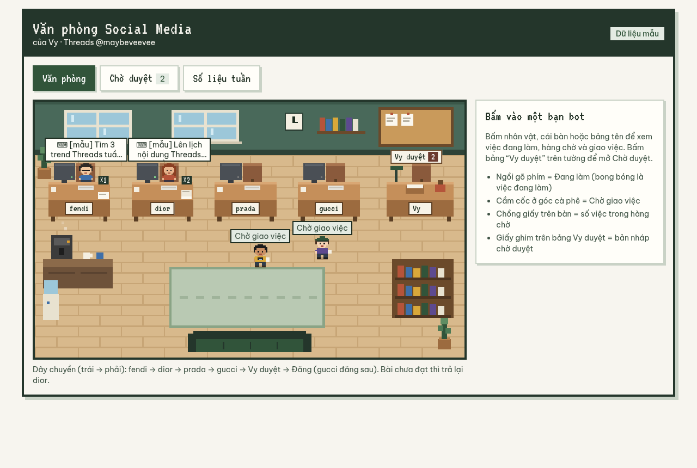
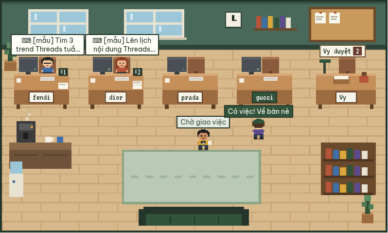
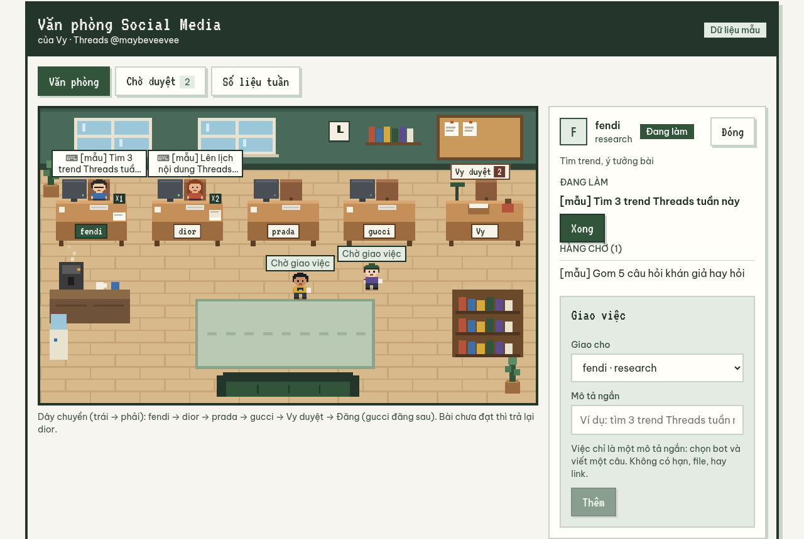

Overview
Four bots, one pixel office.

Research
Content & strategy
Photo
Threads
- What I do in the app
- Assign tasks, approve posts, and review weekly metrics
- Stack
- FastAPI, SQLite, and vanilla HTML, CSS, and JavaScript
- Pixel office
- Drawn with Canvas 2D
- Tests
- 44 pytest tests pass
- Data
- All data in the app is fake sample data
Screenshots

